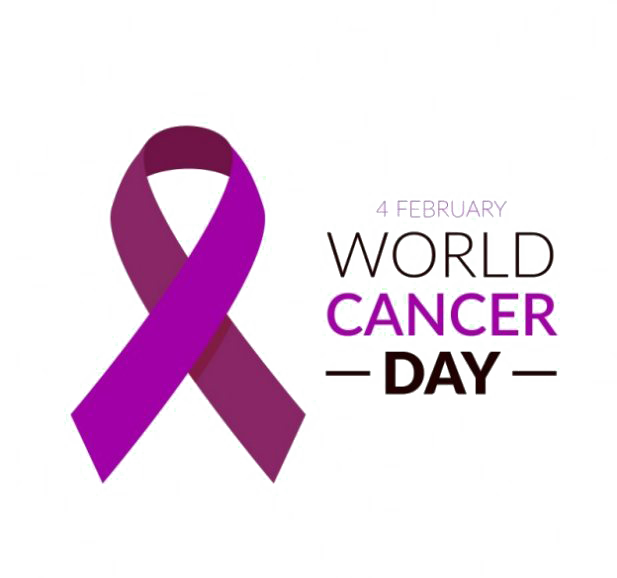

4 Şubat Dünya Kanser Günü
Kanser hem dünya hem ülkemiz için ölüm nedenleri arasında ikinci sırada yer almaktadır. Ölüm nedenlerine bakıldığında dünya geneli için yaklaşık her 6 ölümden birinin, ülkemiz için ise her 5 ölümden birinin kanser nedeniyle gerçekleştiği görülmektedir.
Kanser başlıca; tütün kullanımı, yüksek beden kitle indeksi (fazla kilolu ya da şişman/obez olma), meyve ve sebzeden fakir beslenme, yetersiz fiziksel aktivite ve alkol tüketimi gibi başlıca beş davranışsal ve beslenme ile ilgili risk faktöründen kaynaklanmaktadır. Oysa yine günümüz şartlarında kanserlerin %30-50’ye yakınının, risk faktörlerinden kaçınma ve mevcut kanıta dayalı önleme stratejilerinin uygulanması yoluyla önlenebilir durumda olduğu bilinmektedir. Ayrıca, erken tanı konmuş ve uygun şekilde tedavi edilmişse birçok kanserin iyileşme olasılığının da yüksek olduğu bilinen bir gerçektir.
Dünya Kanser Günü, kanser konusunda farkındalığı ve eğitimi artırarak, dünyanın her yerindeki hükümetler ile bireyleri hastalığa karşı harekete geçmeye zorlayarak her yıl milyonlarca önlenebilir ölümün önüne geçmeyi amaçlamaktadır. Dünya Kanser Günü; yankı uyandırmayı, değişim aşılamayı ve farkındalık günü ile sınırlı kalmayarak daha sonraki günlerde de sürdürülecek bir eylemi harekete geçirmeyi amaçlayan bir kampanyadır.
Kanserden korunmak ve kendinize uygun taramaları yaptırmak için; Toplum Sağlığı Merkezlerine (TSM) bağlı Kanser Erken Teşhis, Tarama ve Eğitim Merkezleri (KETEM), Sağlıklı Hayat Merkezleri (SHM) ve Aile Sağlığı Merkezleri (ASM)’ne başvurulabilir.
Ulusal Kanser Tarama Programları hakkında daha detaylı bilgi Kanser Dairesi Başkanlığına ait web sitesinde mevcuttur. Ayrıca burada Hangi Tarama Bana Uygun? uygulaması ile hangi kanser türünde tarama yaptırabileceği ve en yakın tarama merkezlerine nasıl ulaşılabileceği gösterilmektedir.
(https://hsys.saglik.gov.tr/TaramaBilgilendirme/TaramaBilgilendirme )
Uluslararası Kanser Kontrol Örgütü ve Dünya Sağlık Örgütü gibi kanser alanında yoğun çalışmaları bulunan uluslararası saygın kuruluşlar, her bireyin, küçük ya da büyük eylemlerinin, uzun vadeli, olumlu değişimlere yol açacağını ifade ederek kanserleri önleme yolunda kişilere aşağıdaki risk faktörlerinden kaçınma çağrısında bulunmaktadır:
- Sigara ve dumansız tütün ürünlerini de içeren tütün kullanımı
- Fazla kilolu veya obez olmak
- Düşük meyve ve sebze alımını içeren sağlıksız beslenme
- Fiziksel aktivite eksikliği
- Alkol kullanımı
- Cinsel yolla bulaşan Human Papilloma Virus (HPV) enfeksiyonu
- Hepatit veya diğer kanserojen enfeksiyonlara maruziyet
- İyonlaştırıcı ve ultraviyole radyasyon maruziyeti
- Kentsel hava kirliliği
- Katı yakıt kullanımından kaynaklanan iç mekân dumanı.
Tütün kullanımı, kanser gelişimi yönünden en önemli risk faktörü olup kansere bağlı ölümlerin yaklaşık %22’sinden sorumludur. Akciğer kanserinin yanı sıra özefagus, mesane, böbrek, pankreas, mide, serviks (rahim ağzı) kanserlerinden de sorumlu olduğu bilinen tütün kullanımı, hangi yaşta olursa olsun terk edildiğinde kişinin yaşam kalitesi ve yaşam süresi üzerinde anlamlı bir fark yaratmaktadır.
Obezite ve kanser ilişkisine dair yapılmış çok sayıda epidemiyolojik çalışma obezitenin kansere neden olmasının yanı sıra kanser tedavisine yanıtın azalmasına, hastalık seyrinin bozulmasına ve artmış ölüm oranlarına neden olduğunu da ortaya koymaktadır. Dünya Sağlık Örgütü’ne göre, sağlıklı bir kiloyu korumak ve fiziksel olarak aktif olmakla bağırsak, meme, rahim, yumurtalık, pankreas, yemek borusu, böbrek, karaciğer, safra kesesi kanserlerinin gelişim riski önemli ölçüde azaltılabilmektedir. Yaşam tarzı değişiklikleri (örneğin günlük 30-40 dakikalık yürüyüşler, liften zengin meyve sebze ağırlıklı beslenme gibi) ile kansere karşı anlamlı risk azaltımı sağlanması mümkündür.
Dünya genelinde en sık izlenen kanser türü olan cilt kanserine yönelik alınacak önlemler (Güneşin ultraviyole ışınlarına maruziyeti azaltacak şekilde uygun şapka, gözlük, güneş kremi, koruyucu giysiler kullanılması, güneş ışınlarının zararlı etkilerinin en yoğun hissedildiği saatlerde doğrudan bunlara maruz kalınmaması gibi) ile anlamlı risk azaltımı sağlanabilmektedir.
Kanser hastalıklarının her bir tipinin kendine göre etyolojisi, risk faktörleri, tanı ve tedavi yöntemleri vardır. Bu yüzden erken tanı ve tarama stratejileri de kanser tiplerine göre değişmektedir. Bazı kanser tipleri için (örneğin meme, kalın bağırsak, rahim ağzı vs) tarama önerilirken bazı kanser tipleri için önerilmemektedir (örneğin pankreas, tiroid, mesane gibi).
Ülke genelinde kanser taramaları; Birinci Basamak ve 2.-3. Basamak Sağlık Kuruluşlarında, Toplum tabanlı ve fırsatçı taramalar şeklinde yapılmaktadır.
Ülkemizde yürütülen Ulusal Kanser Tarama programımızda,
Meme kanseri taraması; 40-69 yaş arasındaki kadınlara yılda bir kez klinik meme muayenesi yapılmakta, 2 yılda bir mamografi çekilmektedir.
Rahim ağzı kanseri taraması; 30- 65 yaş arası kadınlara 5 yılda bir HPV-DNA ve smear testi ile yapılmaktadır.
Kalın bağırsak kanseri taraması; 50-70 yaş arasındaki kadın ve erkeklere 2 yılda bir Gaitada Gizli Kan Testi (GGK) yapılmakta, 10 yıl da birde kolonoskopi önerilmektedir.
Kanserin erken teşhis edilip daha kolay tedavi edilebilmesi ancak kişilerin taramaya katılması ile mümkündür.
Tarama sonrasında pozitif ya da şüpheli bulunan kişiler ikinci, üçüncü basamak sağlık kuruluşlarına yönlendirilmekte ve ileri tetkikler yapılmaktadır. Teşhis ve tedavi hizmetleri ikinci ve üçüncü basamak sağlık kuruluşları tarafından yürütülmektedir.
Derleyen: Dr. Tolga SATIOĞLU
Kaynak: https://hsgm.saglik.gov.tr/tr/haberler/4-subat-dunya-kanser-gunu-2022.html
